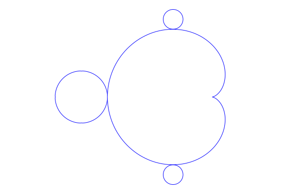
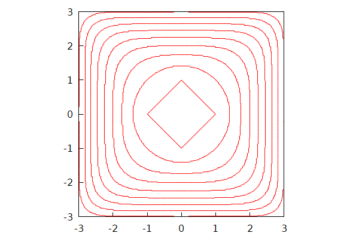
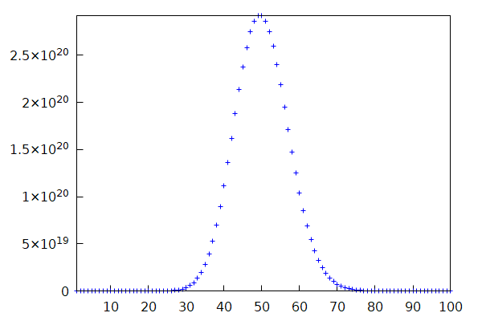
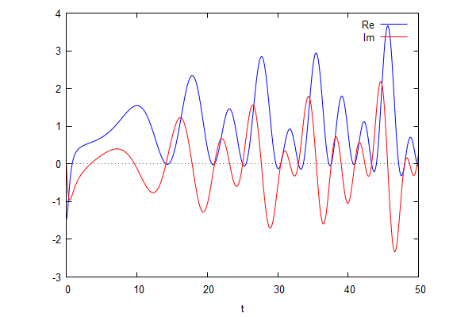
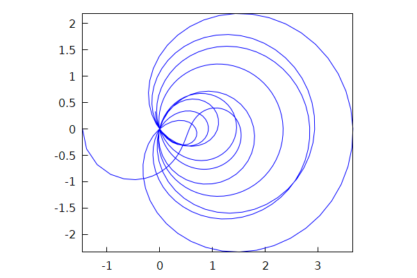
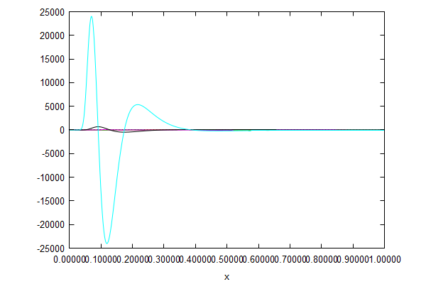

\( \DeclareMathOperator{\abs}{abs} \newcommand{\ensuremath}[1]{\mbox{$#1$}} \)
Lab sheet 11
1 Miscellaneous problems
| --> | r0 : 0 . 0945 $ x0 : − 0 . 1225 $ y0 : 0 . 7449 $ |
| --> |
wxdraw2d
(
proportional_axes = xy , nticks = 200 , axis_top = false , axis_bottom = false , axis_left = false , axis_right = false , xtics = false , ytics = false , parametric ( cos ( t ) / 2 − cos ( 2 · t ) / 4 , sin ( t ) / 2 − sin ( 2 · t ) / 4 , t , 0 , 2 · %pi ) , parametric ( − 1 + cos ( t ) / 4 , sin ( t ) / 4 , t , 0 , 2 · %pi ) , parametric ( x0 + r0 · cos ( t ) , r0 · sin ( t ) + y0 , t , 0 , 2 · %pi ) , parametric ( x0 + r0 · cos ( t ) , r0 · sin ( t ) − y0 , t , 0 , 2 · %pi ) ) ; |
\[\operatorname{ }\]

\[\operatorname{ }\]
| --> |
apply
(
wxdraw2d
,
append
(
[ proportional_axes = xy , color = red ] , makelist ( implicit ( abs ( x ) ^ n + abs ( y ) ^ n = n ^ ( n / 2 ) , x , − 3 , 3 , y , − 3 , 3 ) , n , 1 , 9 ) ) ) ; |
\[\]\[rat: replaced 1.732050807568877 by 37220045/21489003 = 1.732050807568876 \]\[rat: replaced 2.23606797749979 by 16692641/7465176 = 2.236067977499794 \]\[rat: replaced 2.645751311064591 by 38063342/14386591 = 2.645751311064588\]
\[\operatorname{ }\]

\[\operatorname{ }\]
| --> | wxdraw2d ( points ( makelist ( [ n , 50 ^ n / n ! ] , n , 1 , 100 ) ) ) ; |
\[\operatorname{ }\]

\[\operatorname{ }\]
| --> |
N
:
10
$
f ( t ) : = realpart ( bfzeta ( 1 / 2 + %i · t , N ) ) ; g ( t ) : = imagpart ( bfzeta ( 1 / 2 + %i · t , N ) ) ; |
\[\operatorname{ }\operatorname{f}(t):=\operatorname{realpart}\left( \operatorname{bfzeta}\left( \frac{1}{2}+\% i t,N\right) \right) \]
\[\operatorname{ }\operatorname{g}(t):=\operatorname{imagpart}\left( \operatorname{bfzeta}\left( \frac{1}{2}+\% i t,N\right) \right) \]
| --> | f ( 7 ) ; |
\[\operatorname{ }1.0214342314395b0\]
| --> | wxplot2d ( [ f ( t ) , g ( t ) ] , [ t , 0 , 50 ] , [ legend , "Re" , "Im" ] ) ; |
\[\operatorname{ }\]

\[\operatorname{ }\]
| --> |
wxdraw2d
(
proportional_axes = xy , nticks = 500 , parametric ( f ( t ) , g ( t ) , t , 0 , 50 ) ) ; |
\[\operatorname{ }\]

\[\operatorname{ }\]
| --> | y : exp ( − 1 / x ) ; |
\[\operatorname{(y) }{{\% e}^{-\frac{1}{x}}}\]
| --> | dy : makelist ( factor ( diff ( y , x , n ) ) , n , 0 , 5 ) ; |
\[\operatorname{(dy) }[{{\% e}^{-\frac{1}{x}}},\frac{{{\% e}^{-\frac{1}{x}}}}{{{x}^{2}}},-\frac{\left( 2 x-1\right) {{\% e}^{-\frac{1}{x}}}}{{{x}^{4}}},\frac{\left( 6 {{x}^{2}}-6 x+1\right) {{\% e}^{-\frac{1}{x}}}}{{{x}^{6}}},-\frac{\left( 24 {{x}^{3}}-36 {{x}^{2}}+12 x-1\right) {{\% e}^{-\frac{1}{x}}}}{{{x}^{8}}},\frac{\left( 120 {{x}^{4}}-240 {{x}^{3}}+120 {{x}^{2}}-20 x+1\right) {{\% e}^{-\frac{1}{x}}}}{{{x}^{10}}}]\]
| --> | wxplot2d ( dy , [ x , 0 . 00001 , 1 ] , [ legend , false ] ) ; |
\[\operatorname{ }\]

\[\operatorname{ }\]
| --> | kill ( y , dy ) $ |
| --> | expand ( ( x + y + z ) ^ 3 − 3 · ( x + y + z ) · ( x · y + y · z + z · x ) + 3 · x · y · z ) ; |
\[\operatorname{ }{{z}^{3}}+{{y}^{3}}+{{x}^{3}}\]
| --> | expand ( ( x + 1 ) ^ 3 − 3 · ( x + 1 ) ^ 2 + 3 · ( x + 1 ) − 1 ) ; |
\[\operatorname{ }{{x}^{3}}\]
| --> | expand ( ( x + 1 ) ^ 4 − 4 · ( x + 1 ) ^ 3 + 6 · ( x + 1 ) ^ 2 − 4 · ( x + 1 ) + 1 ) ; |
\[\operatorname{ }{{x}^{4}}\]
| --> | expand ( ( x + 1 ) ^ 5 − 5 · ( x + 1 ) ^ 4 + 10 · ( x + 1 ) ^ 3 − 10 · ( x + 1 ) ^ 2 + 5 · ( x + 1 ) − 1 ) ; |
\[\operatorname{ }{{x}^{5}}\]
| --> | p ( n ) : = sum ( binomial ( n , i ) · ( − 1 ) ^ i · ( x + 1 ) ^ ( n − i ) , i , 0 , n ) ; |
\[\operatorname{ }\operatorname{p}(n):=\sum_{i=0}^{n}{\left. \begin{pmatrix}n\\ i\end{pmatrix} {{\left( -1\right) }^{i}} {{\left( x+1\right) }^{n-i}}\right.}\]
| --> | p ( 10 ) ; |
\[\operatorname{ }{{\left( x+1\right) }^{10}}-10 {{\left( x+1\right) }^{9}}+45 {{\left( x+1\right) }^{8}}-120 {{\left( x+1\right) }^{7}}+210 {{\left( x+1\right) }^{6}}-252 {{\left( x+1\right) }^{5}}+210 {{\left( x+1\right) }^{4}}-120 {{\left( x+1\right) }^{3}}+45 {{\left( x+1\right) }^{2}}-10 \left( x+1\right) +1\]
| --> | expand ( p ( 10 ) ) ; |
\[\operatorname{ }{{x}^{10}}\]
| --> | kill ( p ) $ |
| --> | assume ( u > 0 , v > 0 , w > 0 , x > 0 , y > 0 ) ; |
\[\operatorname{ }[u> 0,v> 0,w> 0,x> 0,y> 0]\]
| --> |
A
:
(
1
/
u
+
1
/
v
)
/
(
1
/
x
+
1
/
y
)
;
B : ( u · x / v + x ) / ( u · x / y + u ) ; C : ( x − y ) · ( u / v − v / u ) / ( ( u − v ) · ( x / y − y / x ) ) ; D : ( x ^ 2 + y ^ 2 ) · ( u / v − v / u ) / ( ( u ^ 2 + v ^ 2 ) · ( x / y − y / x ) ) ; E : ( u ^ 3 · x · y + u ^ 2 · v · x · y ) / ( u ^ 3 · v · x + u ^ 3 · v · y ) ; |
\[\operatorname{(A) }\frac{\frac{1}{v}+\frac{1}{u}}{\frac{1}{y}+\frac{1}{x}}\]
\[\operatorname{(B) }\frac{\frac{u x}{v}+x}{\frac{u x}{y}+u}\]
\[\operatorname{(C) }\frac{\left( \frac{u}{v}-\frac{v}{u}\right) \, \left( x-y\right) }{\left( u-v\right) \, \left( \frac{x}{y}-\frac{y}{x}\right) }\]
\[\operatorname{(D) }\frac{\left( \frac{u}{v}-\frac{v}{u}\right) \, \left( {{y}^{2}}+{{x}^{2}}\right) }{\left( {{v}^{2}}+{{u}^{2}}\right) \, \left( \frac{x}{y}-\frac{y}{x}\right) }\]
\[\operatorname{(E) }\frac{{{u}^{2}} v x y+{{u}^{3}} x y}{{{u}^{3}} v y+{{u}^{3}} v x}\]
| --> | factor ( A − B ) ; factor ( A − C ) ; factor ( A − E ) ; |
\[\operatorname{ }0\]
\[\operatorname{ }0\]
\[\operatorname{ }0\]
| --> | factor ( A / D ) ; |
\[\operatorname{ }\frac{\left( {{v}^{2}}+{{u}^{2}}\right) \, \left( y-x\right) }{\left( v-u\right) \, \left( {{y}^{2}}+{{x}^{2}}\right) }\]
| --> | kill ( A , B , C , D , E ) $ |
| --> |
X
:
(
2
+
cos
(
a
)
)
·
cos
(
b
)
;
Y : ( 2 + cos ( a ) ) · sin ( b ) ; Z : sin ( a ) ; U : ( X ^ 2 + Y ^ 2 + Z ^ 2 − 5 ) / 4 ; V : X / ( X ^ 2 + Y ^ 2 ) ; |
\[\operatorname{(X) }\left( \cos{(a)}+2\right) \cos{(b)}\]
\[\operatorname{(Y) }\left( \cos{(a)}+2\right) \sin{(b)}\]
\[\operatorname{(Z) }\sin{(a)}\]
\[\operatorname{(U) }\frac{{{\left( \cos{(a)}+2\right) }^{2}} {{\sin{(b)}}^{2}}+{{\left( \cos{(a)}+2\right) }^{2}} {{\cos{(b)}}^{2}}+{{\sin{(a)}}^{2}}-5}{4}\]
\[\operatorname{(V) }\frac{\left( \cos{(a)}+2\right) \cos{(b)}}{{{\left( \cos{(a)}+2\right) }^{2}} {{\sin{(b)}}^{2}}+{{\left( \cos{(a)}+2\right) }^{2}} {{\cos{(b)}}^{2}}}\]
| --> | trigsimp ( U ) ; |
\[\operatorname{ }\cos{(a)}\]
| --> | trigsimp ( V ) ; |
\[\operatorname{ }\frac{\cos{(b)}}{\cos{(a)}+2}\]
| --> | kill ( X , Y , Z , U , V ) $ |
| --> |
x
:
2
·
u
/
(
u
^
2
+
v
^
2
+
1
)
;
y : 2 · v / ( u ^ 2 + v ^ 2 + 1 ) ; z : ( u ^ 2 + v ^ 2 − 1 ) / ( u ^ 2 + v ^ 2 + 1 ) ; r : sqrt ( x ^ 2 + y ^ 2 + z ^ 2 ) ; w : x / ( 1 − z ) ; |
\[\operatorname{(x) }\frac{2 u}{{{v}^{2}}+{{u}^{2}}+1}\]
\[\operatorname{(y) }\frac{2 v}{{{v}^{2}}+{{u}^{2}}+1}\]
\[\operatorname{(z) }\frac{{{v}^{2}}+{{u}^{2}}-1}{{{v}^{2}}+{{u}^{2}}+1}\]
\[\operatorname{(r) }\sqrt{\frac{{{\left( {{v}^{2}}+{{u}^{2}}-1\right) }^{2}}}{{{\left( {{v}^{2}}+{{u}^{2}}+1\right) }^{2}}}+\frac{4 {{v}^{2}}}{{{\left( {{v}^{2}}+{{u}^{2}}+1\right) }^{2}}}+\frac{4 {{u}^{2}}}{{{\left( {{v}^{2}}+{{u}^{2}}+1\right) }^{2}}}}\]
\[\operatorname{(w) }\frac{2 u}{\left( {{v}^{2}}+{{u}^{2}}+1\right) \, \left( 1-\frac{{{v}^{2}}+{{u}^{2}}-1}{{{v}^{2}}+{{u}^{2}}+1}\right) }\]
| --> | factor ( r ) ; |
\[\operatorname{ }1\]
| --> | factor ( w ) ; |
\[\operatorname{ }u\]
| --> | kill ( x , y , z , r , w ) $ |
| --> | assume ( a > 0 , b > 0 , c > 0 , x > 0 , y > 0 , z > 0 ) ; |
\[\operatorname{ }[\ensuremath{\mathrm{redundant}},\ensuremath{\mathrm{redundant}},\ensuremath{\mathrm{redundant}},\ensuremath{\mathrm{redundant}},\ensuremath{\mathrm{redundant}},\ensuremath{\mathrm{redundant}}]\]
| --> | expand ( ( x ^ ( a · b ) · x ^ ( b · c ) · x ^ ( c · a ) ) ^ ( 1 / ( a · b · c ) ) ) ; |
\[\operatorname{ }{{x}^{\frac{1}{c}+\frac{1}{b}+\frac{1}{a}}}\]
| --> | factor ( ( ( x / y ) / z ) / ( x / ( y / z ) ) ) ; |
\[\operatorname{ }\frac{1}{{{z}^{2}}}\]
| --> | expand ( ( x + 1 ) ^ 6 − 6 · x · ( x + 1 ) ^ 4 + 9 · x ^ 2 · ( x + 1 ) ^ 2 ) ; |
\[\operatorname{ }{{x}^{6}}+2 {{x}^{3}}+1\]
| --> | factor ( ( 2 / x ^ 3 + 2 / ( x ^ 9 − x ^ 3 ) ) − ( 1 / ( x ^ 3 − 1 ) + 1 / ( x ^ 3 + 1 ) ) ) ; |
\[\operatorname{ }0\]
| --> | factor ( subst ( z = ( p · x + q · y ) / ( p + q ) , ( p · x + q · y + r · z ) / ( p + q + r ) − z ) ) ; |
\[\operatorname{ }0\]
2 Solitons
| --> |
q
:
sqrt
(
2
)
;
p
:
log
(
3
+
2
·
q
)
;
r
:
x
−
4
·
t
;
s
:
q
·
(
x
−
8
·
t
)
;
T : 32 · cosh ( 2 · r − p ) + 16 · cosh ( 2 · s − p ) + 16 ; B : 4 · ( 1 + q ) · cosh ( r ) · cosh ( s ) + ( 4 · q − 8 ) · exp ( r + s ) ; phi [ 0 ] : 2 / cosh ( r ) ^ 2 ; phi [ 1 ] : 4 / cosh ( s ) ^ 2 ; phi [ 2 ] : 2 / cosh ( r − p ) ^ 2 ; phi [ 3 ] : 4 / cosh ( s − p ) ^ 2 ; phi [ 4 ] : T / B ^ 2 ; |
\[\operatorname{(q) }\sqrt{2}\]
\[\operatorname{(p) }\log{\left( {{2}^{\frac{3}{2}}}+3\right) }\]
\[\operatorname{(r) }x-4 t\]
\[\operatorname{(s) }\sqrt{2} \left( x-8 t\right) \]
\[\operatorname{(T) }32 \cosh{\left( 2 \left( x-4 t\right) -\log{\left( {{2}^{\frac{3}{2}}}+3\right) }\right) }+16 \cosh{\left( {{2}^{\frac{3}{2}}} \left( x-8 t\right) -\log{\left( {{2}^{\frac{3}{2}}}+3\right) }\right) }+16\]
\[\operatorname{(B) }4 \left( \sqrt{2}+1\right) \cosh{\left( \sqrt{2} \left( x-8 t\right) \right) } \cosh{\left( x-4 t\right) }+\left( {{2}^{\frac{5}{2}}}-8\right) {{\% e}^{\sqrt{2} \left( x-8 t\right) +x-4 t}}\]
\[\operatorname{ }\frac{2}{{{\cosh{\left( x-4 t\right) }}^{2}}}\]
\[\operatorname{ }\frac{4}{{{\cosh{\left( \sqrt{2} \left( x-8 t\right) \right) }}^{2}}}\]
\[\operatorname{ }\frac{2}{{{\cosh{\left( x-4 t-\log{\left( {{2}^{\frac{3}{2}}}+3\right) }\right) }}^{2}}}\]
\[\operatorname{ }\frac{4}{{{\cosh{\left( \sqrt{2} \left( x-8 t\right) -\log{\left( {{2}^{\frac{3}{2}}}+3\right) }\right) }}^{2}}}\]
\[\operatorname{ }\frac{32 \cosh{\left( 2 \left( x-4 t\right) -\log{\left( {{2}^{\frac{3}{2}}}+3\right) }\right) }+16 \cosh{\left( {{2}^{\frac{3}{2}}} \left( x-8 t\right) -\log{\left( {{2}^{\frac{3}{2}}}+3\right) }\right) }+16}{{{\left( 4 \left( \sqrt{2}+1\right) \cosh{\left( \sqrt{2} \left( x-8 t\right) \right) } \cosh{\left( x-4 t\right) }+\left( {{2}^{\frac{5}{2}}}-8\right) {{\% e}^{\sqrt{2} \left( x-8 t\right) +x-4 t}}\right) }^{2}}}\]
| --> | makelist ( factor ( exponentialize ( diff ( phi [ k ] , t ) + diff ( phi [ k ] , x , 3 ) + 6 · phi [ k ] · diff ( phi [ k ] , x ) ) ) , k , 0 , 3 ) ; |
\[\operatorname{ }[0,0,0,0]\]
| --> | err : diff ( phi [ 4 ] , t ) + diff ( phi [ 4 ] , x , 3 ) + 6 · phi [ 4 ] · diff ( phi [ 4 ] , x ) $ |
| --> | err : exponentialize ( err ) $ |
| --> | err : num ( factor ( err ) ) $ |
| --> | err : args ( args ( err ) [ 1 ] ) [ 3 ] $ |
| --> | ev ( subst ( [ x = 1 . 2 , t = − 0 . 7 ] , err ) , numer ) ; |
\[\operatorname{ }1.636375041036662 {{10}^{-22}}\]
| --> | length ( args ( err ) ) ; |
\[\operatorname{ }72\]
| --> |
subst
(
[
%e ^ ( 2 ^ ( 7 / 2 ) · x + 2 ^ ( 5 / 2 ) · x + 4 · x + 2 ^ ( 9 / 2 ) · t + 8 · t ) = E1 , %e ^ ( 2 ^ ( 7 / 2 ) · x + 2 ^ ( 5 / 2 ) · x + 2 · x + 2 ^ ( 9 / 2 ) · t + 16 · t ) = E2 , %e ^ ( 2 ^ ( 7 / 2 ) · x + 2 ^ ( 3 / 2 ) · x + 4 · x + 2 ^ ( 11 / 2 ) · t + 8 · t ) = E3 , %e ^ ( 2 ^ ( 7 / 2 ) · x + 2 ^ ( 3 / 2 ) · x + 2 · x + 2 ^ ( 11 / 2 ) · t + 16 · t ) = E4 , %e ^ ( 2 ^ ( 7 / 2 ) · x + 6 · x + 2 ^ ( 11 / 2 ) · t + 2 ^ ( 9 / 2 ) · t ) = E5 , %e ^ ( 2 ^ ( 7 / 2 ) · x + 6 · x + 3 · 2 ^ ( 9 / 2 ) · t ) = E6 , %e ^ ( 2 ^ ( 7 / 2 ) · x + 4 · x + 2 ^ ( 11 / 2 ) · t + 2 ^ ( 9 / 2 ) · t + 8 · t ) = E7 , %e ^ ( 2 ^ ( 7 / 2 ) · x + 4 · x + 3 · 2 ^ ( 9 / 2 ) · t + 8 · t ) = E8 , %e ^ ( 2 ^ ( 7 / 2 ) · x + 2 · x + 2 ^ ( 11 / 2 ) · t + 2 ^ ( 9 / 2 ) · t + 16 · t ) = E9 , %e ^ ( 2 ^ ( 7 / 2 ) · x + 2 · x + 3 · 2 ^ ( 9 / 2 ) · t + 16 · t ) = E10 , %e ^ ( 2 ^ ( 7 / 2 ) · x + 2 ^ ( 11 / 2 ) · t + 2 ^ ( 9 / 2 ) · t + 24 · t ) = E11 , %e ^ ( 2 ^ ( 7 / 2 ) · x + 3 · 2 ^ ( 9 / 2 ) · t + 24 · t ) = E12 , %e ^ ( 3 · 2 ^ ( 5 / 2 ) · x + 4 · x + 2 ^ ( 9 / 2 ) · t + 8 · t ) = E13 , %e ^ ( 3 · 2 ^ ( 5 / 2 ) · x + 2 · x + 2 ^ ( 9 / 2 ) · t + 16 · t ) = E14 , %e ^ ( 2 ^ ( 5 / 2 ) · x + 3 · 2 ^ ( 3 / 2 ) · x + 4 · x + 2 ^ ( 11 / 2 ) · t + 8 · t ) = E15 ] , err ) ; |
\[\operatorname{ }3 {{2}^{\frac{3}{2}}} {{\% e}^{{{2}^{\frac{5}{2}}} x+3 {{2}^{\frac{3}{2}}} x+2 x+{{2}^{\frac{11}{2}}} t+16 t}}+10 {{\% e}^{{{2}^{\frac{5}{2}}} x+3 {{2}^{\frac{3}{2}}} x+2 x+{{2}^{\frac{11}{2}}} t+16 t}}+7 {{2}^{\frac{3}{2}}} {{\% e}^{{{2}^{\frac{5}{2}}} x+{{2}^{\frac{3}{2}}} x+6 x+{{2}^{\frac{13}{2}}} t}}-7 \sqrt{2} {{\% e}^{{{2}^{\frac{5}{2}}} x+{{2}^{\frac{3}{2}}} x+6 x+{{2}^{\frac{13}{2}}} t}}+10 {{\% e}^{{{2}^{\frac{5}{2}}} x+{{2}^{\frac{3}{2}}} x+6 x+{{2}^{\frac{13}{2}}} t}}+3 {{2}^{\frac{13}{2}}} {{\% e}^{{{2}^{\frac{5}{2}}} x+{{2}^{\frac{3}{2}}} x+4 x+{{2}^{\frac{13}{2}}} t+8 t}}-127 \sqrt{2} {{\% e}^{{{2}^{\frac{5}{2}}} x+{{2}^{\frac{3}{2}}} x+4 x+{{2}^{\frac{13}{2}}} t+8 t}}+92 {{\% e}^{{{2}^{\frac{5}{2}}} x+{{2}^{\frac{3}{2}}} x+4 x+{{2}^{\frac{13}{2}}} t+8 t}}+35 {{2}^{\frac{11}{2}}} {{\% e}^{{{2}^{\frac{5}{2}}} x+{{2}^{\frac{3}{2}}} x+2 x+{{2}^{\frac{13}{2}}} t+16 t}}-939 \sqrt{2} {{\% e}^{{{2}^{\frac{5}{2}}} x+{{2}^{\frac{3}{2}}} x+2 x+{{2}^{\frac{13}{2}}} t+16 t}}+256 {{\% e}^{{{2}^{\frac{5}{2}}} x+{{2}^{\frac{3}{2}}} x+2 x+{{2}^{\frac{13}{2}}} t+16 t}}+2617 {{2}^{\frac{3}{2}}} {{\% e}^{{{2}^{\frac{5}{2}}} x+{{2}^{\frac{3}{2}}} x+{{2}^{\frac{13}{2}}} t+24 t}}-4995 \sqrt{2} {{\% e}^{{{2}^{\frac{5}{2}}} x+{{2}^{\frac{3}{2}}} x+{{2}^{\frac{13}{2}}} t+24 t}}+338 {{\% e}^{{{2}^{\frac{5}{2}}} x+{{2}^{\frac{3}{2}}} x+{{2}^{\frac{13}{2}}} t+24 t}}+111 {{2}^{\frac{3}{2}}} {{\% e}^{{{2}^{\frac{5}{2}}} x+4 x+{{2}^{\frac{13}{2}}} t+{{2}^{\frac{9}{2}}} t+8 t}}+314 {{\% e}^{{{2}^{\frac{5}{2}}} x+4 x+{{2}^{\frac{13}{2}}} t+{{2}^{\frac{9}{2}}} t+8 t}}-111 {{2}^{\frac{3}{2}}} {{\% e}^{{{2}^{\frac{5}{2}}} x+4 x+{{2}^{\frac{11}{2}}} t+3 {{2}^{\frac{9}{2}}} t+8 t}}-314 {{\% e}^{{{2}^{\frac{5}{2}}} x+4 x+{{2}^{\frac{11}{2}}} t+3 {{2}^{\frac{9}{2}}} t+8 t}}+1801 {{2}^{\frac{3}{2}}} {{\% e}^{{{2}^{\frac{5}{2}}} x+2 x+{{2}^{\frac{13}{2}}} t+{{2}^{\frac{9}{2}}} t+16 t}}+5094 {{\% e}^{{{2}^{\frac{5}{2}}} x+2 x+{{2}^{\frac{13}{2}}} t+{{2}^{\frac{9}{2}}} t+16 t}}-1801 {{2}^{\frac{3}{2}}} {{\% e}^{{{2}^{\frac{5}{2}}} x+2 x+{{2}^{\frac{11}{2}}} t+3 {{2}^{\frac{9}{2}}} t+16 t}}-5094 {{\% e}^{{{2}^{\frac{5}{2}}} x+2 x+{{2}^{\frac{11}{2}}} t+3 {{2}^{\frac{9}{2}}} t+16 t}}-7 \sqrt{2} {{\% e}^{3 {{2}^{\frac{3}{2}}} x+6 x+{{2}^{\frac{13}{2}}} t}}-10 {{\% e}^{3 {{2}^{\frac{3}{2}}} x+6 x+{{2}^{\frac{13}{2}}} t}}-65 \sqrt{2} {{\% e}^{3 {{2}^{\frac{3}{2}}} x+4 x+{{2}^{\frac{13}{2}}} t+8 t}}-92 {{\% e}^{3 {{2}^{\frac{3}{2}}} x+4 x+{{2}^{\frac{13}{2}}} t+8 t}}-181 \sqrt{2} {{\% e}^{3 {{2}^{\frac{3}{2}}} x+2 x+{{2}^{\frac{13}{2}}} t+16 t}}-256 {{\% e}^{3 {{2}^{\frac{3}{2}}} x+2 x+{{2}^{\frac{13}{2}}} t+16 t}}-239 \sqrt{2} {{\% e}^{3 {{2}^{\frac{3}{2}}} x+{{2}^{\frac{13}{2}}} t+24 t}}-338 {{\% e}^{3 {{2}^{\frac{3}{2}}} x+{{2}^{\frac{13}{2}}} t+24 t}}+985 {{2}^{\frac{3}{2}}} {{\% e}^{{{2}^{\frac{3}{2}}} x+4 x+{{2}^{\frac{13}{2}}} t+{{2}^{\frac{11}{2}}} t+8 t}}+2786 {{\% e}^{{{2}^{\frac{3}{2}}} x+4 x+{{2}^{\frac{13}{2}}} t+{{2}^{\frac{11}{2}}} t+8 t}}-985 {{2}^{\frac{3}{2}}} {{\% e}^{{{2}^{\frac{3}{2}}} x+4 x+3 {{2}^{\frac{11}{2}}} t+8 t}}-2786 {{\% e}^{{{2}^{\frac{3}{2}}} x+4 x+3 {{2}^{\frac{11}{2}}} t+8 t}}-985 {{2}^{\frac{3}{2}}} {{\% e}^{{{2}^{\frac{3}{2}}} x+2 x+{{2}^{\frac{13}{2}}} t+{{2}^{\frac{11}{2}}} t+16 t}}-2786 {{\% e}^{{{2}^{\frac{3}{2}}} x+2 x+{{2}^{\frac{13}{2}}} t+{{2}^{\frac{11}{2}}} t+16 t}}+985 {{2}^{\frac{3}{2}}} {{\% e}^{{{2}^{\frac{3}{2}}} x+2 x+3 {{2}^{\frac{11}{2}}} t+16 t}}+2786 {{\% e}^{{{2}^{\frac{3}{2}}} x+2 x+3 {{2}^{\frac{11}{2}}} t+16 t}}-3 {{2}^{\frac{13}{2}}} \ensuremath{\mathrm{E9}}+127 \sqrt{2} \ensuremath{\mathrm{E9}}-92 \ensuremath{\mathrm{E9}}+5 \sqrt{2} \ensuremath{\mathrm{E8}}+8 \ensuremath{\mathrm{E8}}-{{2}^{\frac{11}{2}}} \ensuremath{\mathrm{E7}}+27 \sqrt{2} \ensuremath{\mathrm{E7}}-8 \ensuremath{\mathrm{E7}}-\sqrt{2} \ensuremath{\mathrm{E6}}+2 \ensuremath{\mathrm{E6}}-{{2}^{\frac{3}{2}}} \ensuremath{\mathrm{E5}}+3 \sqrt{2} \ensuremath{\mathrm{E5}}-2 \ensuremath{\mathrm{E5}}-3 {{2}^{\frac{3}{2}}} \ensuremath{\mathrm{E4}}-10 \ensuremath{\mathrm{E4}}-{{2}^{\frac{3}{2}}} \ensuremath{\mathrm{E3}}-6 \ensuremath{\mathrm{E3}}-{{2}^{\frac{3}{2}}} \ensuremath{\mathrm{E2}}-2 \ensuremath{\mathrm{E2}}+{{2}^{\frac{3}{2}}} \ensuremath{\mathrm{E15}}+6 \ensuremath{\mathrm{E15}}+{{2}^{\frac{3}{2}}} \ensuremath{\mathrm{E14}}+2 \ensuremath{\mathrm{E14}}-5 {{2}^{\frac{3}{2}}} \ensuremath{\mathrm{E13}}+14 \ensuremath{\mathrm{E13}}+239 \sqrt{2} \ensuremath{\mathrm{E12}}+338 \ensuremath{\mathrm{E12}}-251 {{2}^{\frac{3}{2}}} \ensuremath{\mathrm{E11}}+263 \sqrt{2} \ensuremath{\mathrm{E11}}-338 \ensuremath{\mathrm{E11}}+65 \sqrt{2} \ensuremath{\mathrm{E10}}+92 \ensuremath{\mathrm{E10}}+5 {{2}^{\frac{3}{2}}} \ensuremath{\mathrm{E1}}-14 \ensuremath{\mathrm{E1}}\]
Created with wxMaxima.
The source of this Maxima session can be downloaded here.